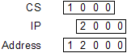
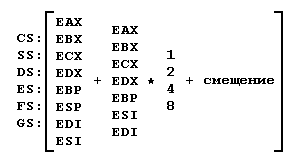

Адресация памяти
16-разрядные процессоры могут адресовать память размером в 1 Мб. Но, поскольку сформировать 20-разрядный адрес с помощью 16-разрядных регистров напрямую нельзя, используется сегментация памяти. Вся память делится на перекрывающиеся сегменты по 64 Кб каждый. Базовый адрес каждого сегмента памяти кратен 16 байтам. Для формирования полного адреса используется адрес сегмента, хранящийся в сегментном регистре и смещение внутри сегмента.
Общая схема формирования адреса показана на рисунке ниже.

Все процессоры Intel имеют эту схему адресации к памяти. Исполнительный адрес для них задается в виде
<сегмент>:<смещение>
Для указания сегмента адреса используются сегментные регистры CS, DS, ES. И, начиная с 80386 процессора, в его архитектуру были добавлены еще два дополнительных сегментных регистра - FS и GS, которые могут использоваться наравне с другими сегментными регистрами.
В отличие от задания сегмента, смещение может задаваться несколькими способами, называемыми способами адресации.
Прямая адресация
Прямая адресация предполагает использование в качестве смещения непосредственно заданное значение.
mov ax,ds:[100h] mov cx,_d1 ... _d1 dw 3F0h
Косвенная адресация
При использовании косвенной адресации, смещение получается из регистра общего назначения. Адресация может производиться только через регистры BX, BP, SI и DI.
mov ax,[bx] mov cx,[si]
Адресация по базе со сдвигом
При использовании адресации по базе со сдвигом, смещение вычисляется как сумма значения регистра и непосредственно заданного значения.
mov ax,[si+400h] mov cx,[bx-80h]
Адресация по базе с индексированием
При использовании адресации по базе со сдвигом, смещение вычисляется как сумма значений двух регистров и непосредственно заданного значения (если оно задано).
mov ax,[bx+si-3F0h] mov cx,[bp+bx]
32-разрядная адресация
В 32-разрядных процессорах Intel добавилась новая схема адресации с использованием всех 32-разрядных регистров общего назначения. В этой схеме адресации смещение вычисляется по следующей формуле:
<Смещение> = <База> + ( <Индекс> * <Масштаб> ) + <Значение>
Полная схема 32-разрядной адресации представлена на рисунке:

mov cx,[eax+esi] mov eax,[esi*4] mov di,[ebx+esi*4-100h]